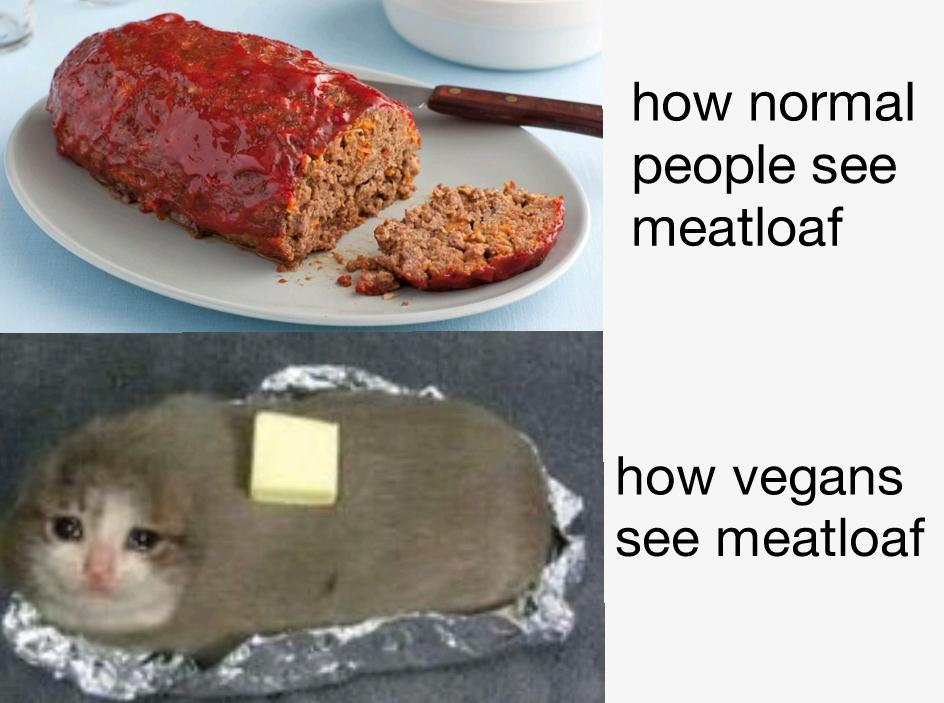

Eatloaf

Description
This is a heart healthy spin on the classic and mysterious dish of meatloaf.
Inspired in our kitchen less so to save cute kitty and more so to eat more
whole foods. This delightful blend of veggies, greens, and beans will most
definitely be tasty af, be good for your heart, and possibly make you fart as
the old nursery rhyme goes.
Ingredients
- 1 can canneleni beans
- 1 can garbanzo beans
- 1 can black beans
- 1 bag kale
- 1 bag spinach
- 1 large sweet onion
- 1 large zucchini (yellow or green;
heck it's your eatloaf do both if you want!)
- 2 bell peppers (go crazy and pick your favorite colors)
- 2 cloves garlic
- Salt and his foxy minx of a partner Pepper
- Onion powder
- Garlic powder
- "The Sauce" (Literally and sauce you'd like to flavor the dish with. We prefer BBQ)
- Cooking oil (optional)
Steps
- Wash all your veggies using a strainer in cool water and allow time to airdry
(or use dish soap like viral chicken guy... to each theirown)
- Sautee peppers, onions, zucchini, and garlic in a ginormous skillet/wok over med-high
heat. Feel free to use a bit of cooking oil here if you prefer, our
go to is olive oil. If you would like to keep this meal more whole food based
1/2 to 1 tbsp may be added as needed to the center of your impressively large
skillet of choice as needed. Saute until all veggies are appropriately
browned to your preference.
- Once veggies are at the proper level of delicousness add your kale, then add
your spinach. Cook both greens down generously and begin adding spice and sauce
to this dish like you
are the terrifying and glorious Gordon Ramsey himself. Feel free to berate
and degrade your merits as a chef during this stage if that's the sort of
culinary bliss you are into. Click
here if you need
some inspiration.
- Once your veggie base is complete you will add all your beans and heat them over
medium heat for an additional 5 minutes or so. Then allow your veggie concoction to
cool to a